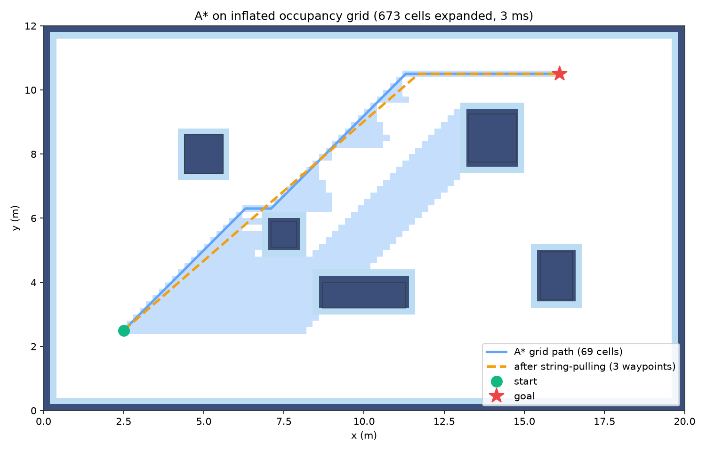

10.1导航栈的全貌
10.2A*：在栅格地图上找最优走廊
输入是第 6 章的占据栅格（把 log-odds > 阈值的格子标记为障碍）+ 起点终点， 输出一条格子序列。A\* 的精髓是给搜索装上"方向感"：
$$
f(n) = g(n) + h(n)
\qquad
\begin{cases}
g(n) & \text{：从起点走到 } n \text{ 的实际代价}\\
h(n) & \text{：} n \text{ 到终点的启发式估计（对角欧氏距离）}
\end{cases}
$$
每次从优先队列弹出 $f$ 最小的格子扩展。$h$ 必须可采纳（admissible）：永远不高估， 否则可能错过最优解；对角欧氏距离满足三角不等式，是 8 连通栅格的可采纳启发式。 $h=0$ 时 A* 退化为 Dijkstra（全方位扩散，慢）；$h$ 恰当则搜索像"有目标感的触手"直奔终点。
run_astar.py —— A* 核心（优先队列版）
def astar(occ, start, goal):
"""8 连通 A*：直行代价 1，斜行 √2；启发式 = 对角欧氏"""
SQ2 = np.sqrt(2.0)
def h(r, c): # 可采纳启发式
dr, dc = abs(r - goal[0]), abs(c - goal[1])
return (dr + dc) + (SQ2 - 2) * min(dr, dc)
g = {start: 0.0}; parent = {}; closed = set()
pq = [(h(*start), 0.0, start)] # (f, g, node)
while pq:
f, gcur, cur = heapq.heappop(pq)
if cur == goal:
return backtrace(parent), closed
for dr, dc, w in NEIGH8:
nr, nc = cur[0]+dr, cur[1]+dc
if blocked(nr, nc): continue
if dr and dc and (blocked(cur[0]+dr, cur[1]) or
blocked(cur[0], cur[1]+dc)):
continue # 防止斜穿墙角！
ng = gcur + w
if ng < g.get((nr, nc), inf):
g[(nr, nc)] = ng; parent[(nr, nc)] = cur
heapq.heappush(pq, (ng + h(nr, nc), ng, (nr, nc)))
return None, closed两个必踩的坑
- 斜穿墙角：8 连通时从 (0,0) 斜走到 (1,1) 可能穿过两面墙的夹缝。 必须检查两个直行邻格是否都自由（上面代码倒数第 6 行）。漏掉它，路径会"透墙"。
- 忘了膨胀障碍：路径贴着墙走，机器人本体（半径 0.35 m）会撞墙。 所有障碍按机器人半径膨胀后再搜索——A* 只对"质心"规划，膨胀负责"把身体算进去"。
10.3膨胀与拉直：从格子序列到可执行路径
A* 输出的是锯齿状格子序列，直接喂给 MPC 会造成无意义的左右抖动。两步加工：
- 障碍膨胀（inflation）：用距离变换把每个障碍"涂厚"机器人半径。
课程用 scipy 的
distance_transform_edt（对格子图做欧氏距离变换，一行完成）。 规划器在膨胀图上搜索，路径自然与真墙保持安全距离。 - 视线拉直（string pulling）：从起点出发，贪心地找到"能与当前点直视的最远格点" 作为下一个航点——直视 = 两点连线上的格子全部自由。栅格路径 69 格被拉成 3 个航点， MPC 跟踪的参考线立刻变得优雅。

10.4与 SLAM 地图的衔接
第 8 章的 SLAM 输出的是概率栅格（log-odds）。衔接只需两个函数：
从 SLAM 地图到规划地图
# 1) 概率栅格 → 二值占据（log-odds > 1.2 ≈ p > 77%）
blocked = (grid.logodds > 1.2).astype(np.uint8)
# 2) 膨胀（欧氏距离变换）
dist = distance_transform_edt(~blocked.astype(bool)) * res
planning_map = dist < robot_radius
# —— 之后 A* 在 planning_map 上跑，MPC 跟踪拉直后的航点 ——阈值 1.2（p≈77%）的取舍：太高 → 薄墙/半占据的格子被当成可走，路径穿"影"； 太低 → 噪声格子全变墙，可走空间被蚕食。概率地图 → 二值地图的信息损失不可逆， 工业做法是保留代价地图（costmap）的连续分级，规划器按代价而非 0/1 规划（Nav2 的 costmap_2d）。
10.5实把玩：A* 工作台
下面的工作台和 run_astar.py 逻辑一致，还多了手绘能力：
点击地图涂墙（再点擦除）、拖拽起点/终点，然后运行 A* 看扩展动画，
最后让 MPC 把你规划的路跑完。
交互 · A* 规划工作台
涂一面墙把路堵死，看 A* 怎么绕；把路堵死看它报告"无可达"
障碍
A* 扩展区域
栅格路径
拉直后路径
MPC 预测
10.6终章演示：三阶段全栈（首页同款）
首页的全栈演示放在这里收尾正合适——现在你可以逐阶段说出它内部在跑什么：
交互 · 导航全栈（建图 → 规划 → 跟踪）
建图完成后可点击地图自定义目标点
回看这张导航栈，你已经拥有全部零件
- 感知层：world/robot（第 3 章）→ ICP（第 5 章）→ 栅格（第 6 章）→ 位姿图（第 7 章）→ 组装（第 8 章）
- 规划层：栅格二值化 + 膨胀 + A* + 拉直（本章）
- 控制层：误差模型 + QP + OSQP（第 9 章）
- 执行层：差速运动学（第 3 章）
检查点 · 离开本章前
- 能手写 A* 主循环（含斜穿墙角检查与可采纳启发式）
- 解释膨胀和拉直各自把"格子序列"变成了什么
- 知道 SLAM 概率地图 → 规划地图的二值化取舍
- 在工作台里堵路成功让 A* 绕行 / 报告不可达各一次
- 看懂了终章演示的三个阶段各在执行什么算法
练习 1 · 换成 Dijkstra 对比扩展数
把 h 置零（
return 0）就是 Dijkstra。同一地图同一目的地重跑，
对比 closed 集合大小：Dijkstra 通常扩展 3~8 倍的格子（向所有方向扩散），
A* 像定向触手。这张对比图放进你的项目 README，比十句话都有说服力。练习 2 · 实现 Theta*（任意角路径）
A* 的路径被 8 个方向限制；Theta* 在扩展节点 n 时额外检查
"parent(n) 与 n 的邻居是否直视"，若直视则 g 值按欧氏直线距离更新——
路径不再贴格子线，天然更短更顺。修改量约 15 行（复用 string pulling 的 los 函数）。